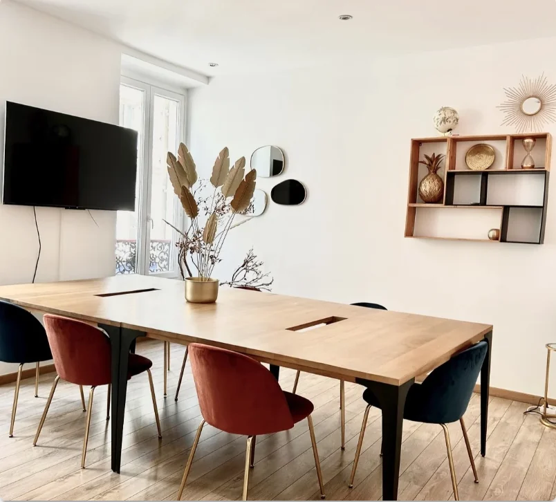

Un site qui convertit
Chaque visite transformée en demande de rendez-vous ou de réservation.

Spécialiste des métiers de l’esthétique et du wellness
Passez moins de temps derrière l’écran et plus de temps là où se fait votre chiffre d’affaires.
Premier échange sans engagement
Croissance et performance
Chaque visite transformée en demande de rendez-vous ou de réservation.
Une présence locale soignée et une réputation entretenue, avis après avis.
Votre établissement cité par les assistants IA, nourri par des contenus réguliers.
Mails, réseaux sociaux, site : tout est centralisé, déjà traité, répondu en brouillon et trié par ordre de priorité.
Le bon créneau proposé selon vos ressources disponibles, même en dehors des heures d’ouverture.
Un suivi interrompu, un forfait ou un protocole non terminé : le message de relance est prêt.
Contrats, dossiers clients, fournisseurs et historiques : les informations essentielles sont rassemblées pour préparer vos rendez-vous, suivre vos échéances et faciliter vos décisions.
Vos chiffres mis en perspective par l’IA, pour savoir où agir et faire croître votre chiffre d’affaires.
Des décisions fondées sur des faits, pas sur l’intuition
L’intelligence artificielle vous fait gagner des heures, une automatisation bien construite vous en fait gagner bien plus
Estimation indicative
Secteurs
Choisissez votre secteur pour découvrir les enjeux, systèmes et résultats adaptés à votre activité.

Demandes de consultation, suivi patient et présence en ligne, dans le respect de la confidentialité.
Découvrir l’expertise dédiée
Réservations, campagnes saisonnières et coordination des équipes.
Découvrir l’expertise dédiée
Offres lisibles, temps forts anticipés et demandes de séjour mieux suivies.
Découvrir l’expertise dédiée
Demandes, relances et visibilité locale, pour alléger la charge quotidienne.
Découvrir l’expertise dédiéeLa méthode et le contrôle humain
On automatise d’abord ce qui apporte une valeur claire, sans bouleverser inutilement votre organisation.
Comprendre les objectifs, les points de friction et les outils déjà en place.
Choisir les actions qui apportent le plus de clarté, de temps gagné ou de suivi.
Mettre en place une première solution et la vérifier dans les conditions réelles.
Documenter, faciliter la prise en main et améliorer selon les usages.
Les actions sensibles peuvent conserver une étape de contrôle avant envoi ou exécution.
Les systèmes sont vérifiés avant déploiement et adaptés à la nature des informations traitées.
Les outils existants sont conservés lorsqu’ils restent pertinents.
Tarifs
Diagnostics
Audit intégré au tarif global si un contrat de mise en œuvre est signé à sa suite
800 € HT
Pour les établissements (spa, hôtel, clinique, cabinet) qui veulent développer leur clientèle :
Visibilité digitale : analyse du référencement naturel (SEO), du SEO local, de la visibilité sur les moteurs IA (GEO), des mots-clés, des contenus, du maillage interne, de la présence locale, des avis et de l’e-réputation.
Acquisition digitale : analyse des canaux d’acquisition, du parcours prospect, des offres, des appels à l’action et de la maîtrise du fichier client face aux plateformes de réservation.
Audit UX/UI : lisibilité, navigation, expérience mobile, accessibilité et fluidité des formulaires ou de la prise de rendez-vous.
Audit de conversion (CRO) : analyse des freins à la prise de contact, des étapes d’abandon et des indicateurs disponibles ; recommandations d’optimisation, même en l’absence de données de trafic suffisantes.
Livrable : diagnostic et plan d’action pour développer votre clientèle.
800 € HT
Pour les structures qui veulent gagner du temps et mieux piloter leur activité : analyse de votre fonctionnement interne, de vos outils et des tâches qui pèsent sur vos équipes, puis identification de ce qui mérite d’être automatisé ou confié à des agents IA, et de ce qui doit rester humain.
Livrable : cartographie de vos opportunités et feuille de route d’automatisation priorisée.
Mise en œuvre
Sur devis, après définition de vos besoins et des outils à connecter
Un premier système d’automatisation construit autour de vos outils existants : demandes centralisées, planning qui se remplit 24 h/24 et 7 j/7, rappels et relances automatiques, questionnaires de prise en charge 24 heures avant le soin, formulaires de satisfaction, avis vers Google. Vous validez chaque envoi sensible ; le déploiement est documenté et vous appartient.
Livrable : un premier système en service, testé et documenté, avec la prise en main de vos équipes.
Sur devis
Acquisition, suivi, automatisation, visibilité et pilotage reliés selon vos besoins. Pour les structures multi-sites, un système multi-agents peut être mis en place selon les besoins.
Livrable : stratégie, mise en place, automatisations, coordination et documentation.
Après la mise en place
Garantie incluse, puis à la demande
Vous restez propriétaire de vos systèmes et de votre site.
Pourquoi AesthéIA
L’objectif n’est pas d’ajouter des outils à ceux que vous utilisez déjà, mais de les relier entre eux et de corriger les points de friction qui freinent votre organisation, votre suivi ou votre visibilité.
Le parcours prospect, la présence digitale et les processus internes sont regardés comme un ensemble, pas comme des sujets séparés.
Hébergement certifié HDS pour les données de santé, hébergement en France et validation humaine avant chaque envoi automatisé. Pour les données sensibles, AesthéIA s’appuie sur des ingénieurs en cybersécurité.

Fondatrice
20+ans d’expérience terrain dans l’esthétique et le wellness
Du soin à la gestion d’équipe, en passant par l’accueil et l’administratif, je connais de l’intérieur ce qui se joue derrière l’expérience client. Je relie aujourd’hui cette connaissance du terrain à la visibilité en ligne, du référencement aux réseaux sociaux, à l’intelligence artificielle et à l’automatisation.


Non. AesthéIA intervient auprès des entreprises partout en France métropolitaine, principalement à distance. Des interventions sur site peuvent également être organisées selon la nature de la mission, la localisation et les conditions définies ensemble.
Ici, le prix affiché est le prix du projet, pas un prix d’appel. Le diagnostic visibilité & acquisition et le diagnostic automatisation & IA sont chacun à 800 € HT, intégrés au tarif global si un contrat de mise en œuvre est signé à sa suite. Les automatisations et intégrations IA sont sur devis, après définition de vos besoins et des outils à connecter. Les agents IA et les systèmes multi-agents, notamment pour les structures multi-sites, sont chiffrés sur devis après cadrage. Vous recevez un chiffrage global et exact avant de commencer, sans engagement annuel ni options empilées. Le premier échange est gratuit et sans engagement.
Cela dépend du périmètre du projet. Un diagnostic initial prend généralement quelques jours, et une première solution concrète peut être mise en place en quelques semaines. Les interventions plus complètes, impliquant plusieurs automatisations ou une refonte de la visibilité digitale, s’inscrivent sur un temps plus long, défini ensemble dès le départ.
Une automatisation exécute des règles définies à l’avance. Un agent IA analyse un contexte précis, consulte les informations autorisées et prépare une action dans des limites définies. Un système multi-agents fait collaborer plusieurs agents spécialisés sous la coordination d’un agent superviseur. Dans tous les cas, les décisions sensibles restent validées par vos équipes.
Il est surtout pertinent pour les groupes, réseaux et structures multi-sites. Pour un établissement unique, une automatisation ou un agent IA spécialisé suffit souvent. La recommandation se fait après le premier échange, en fonction de votre organisation et de vos priorités.
Oui, lorsqu’elle s’inscrit dans une logique d’automatisation. Je conçois ou repense des sites capables d’intégrer directement des fonctionnalités utiles à votre activité : prise de rendez-vous automatisée, chatbot de qualification, formulaires connectés à votre suivi commercial ou autres parcours adaptés à vos besoins. L’objectif n’est pas de créer un simple site vitrine, mais un site conçu pour informer, orienter et faciliter les actions de vos prospects.
Oui, c’est une exigence de base de chaque projet. Les données de santé sont hébergées dans un environnement certifié HDS, l’hébergement est situé en France et seules les informations nécessaires circulent entre vos outils. Les envois automatisés restent soumis à une validation humaine.
Non. Les automatisations prennent en charge les tâches répétitives : ressaisies, rappels, relances, préparation de réponses. Votre équipe peut ainsi se consacrer à l'accueil, au soin et à l'expérience de votre clientèle ou de vos patients.
Non, dans la grande majorité des cas : on vérifie d’abord ce que votre logiciel sait déjà faire, puis on construit uniquement ce qui manque. Si un changement s’avère préférable, vous recevez une comparaison indépendante, sans lien commercial avec aucun éditeur.
Il dure 30 minutes, il est gratuit et sans engagement. Nous faisons le point sur votre activité, vos outils et les tâches qui vous prennent le plus de temps, puis je vous indique les pistes les plus utiles et la suite possible.
Premier pas
Moins d’administratif, moins de rendez-vous perdus, plus de temps pour votre clientèle. Parlez-moi de votre activité et de vos priorités pour préparer un premier échange.
Quelques questions pour préparer notre premier échange. Sans engagement.
Adresse
6 rue d'Armaillé
75017 Paris
Accueil exclusivement sur rendez-vous
Pour toute demande, contactez-moi par téléphone ou par e-mail.
